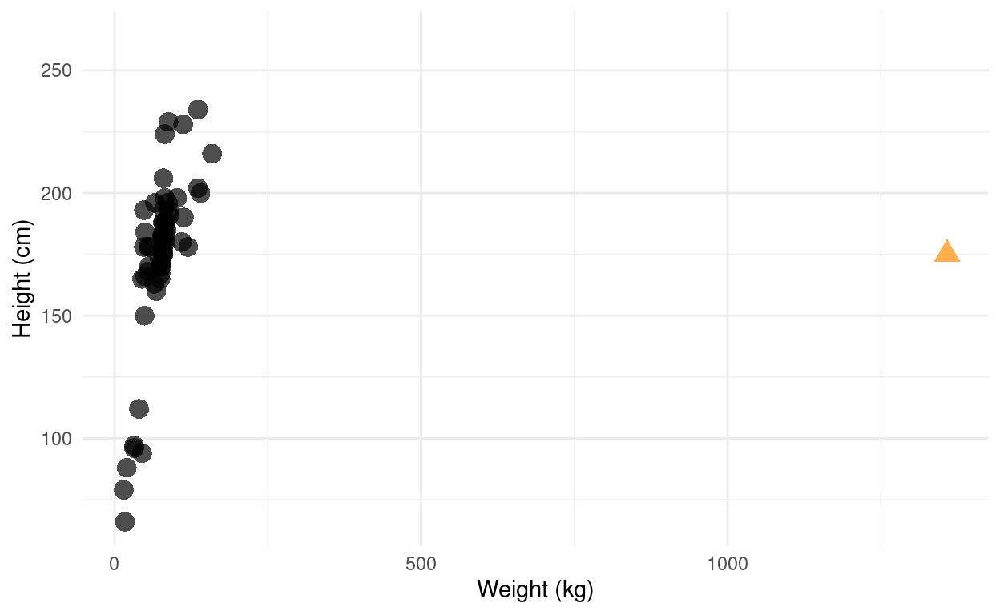

Aim
This is a short walkthrough the most important tidyverse functions. Includes also a primer on plotting in R.
Setup
We start by loading all the necessary packages. There’s quite a few, but they will allow us to make pretty plots.
Throughout this tutorial we will use various plot themes, we will change the various aspects of the plots aesthetics to get comfortable with customizing the figures. We will see Some of them will help us tell the story, others will be a matter of taste. In all cases we will learn how to plot the data, how to change the way it is plotted, but also, you will hopefully learn which themes and settings you like most.
# the package of all packages
library(tidyverse)
# penguins data set
library(ggsci)
# composer of plots
library(patchwork)Dataset
We will be using starwars dataset in this tutorial. This dataset contains information about starwars characters, such as their name, height, mass, vehicle etc. The dataset is loaded with tidyverse package, and for more information on it use ?tidyverse::starwars command in your R console.
starwarsDocumentation
Tidyverse has very robust documentation - you can read it online or in your RStudio by using ? and ??.
?mutate # this will open a help page for a mutate packageThe pipe
The most important thing in the tidyverse universe, in my opinion, is the pipe %>%. The best way to visualize the concept of a pipe is as follows:
You could write R code as follows:
leave_house(get_dressed(get_out_of_bed(wake_up(me))))or like this:
woken_up_me <- wake_up(me)
standing_up_me <- get_out_of_bed(woken_up_me)
dressed_me <- get_dressed(standing_up_me)
ready_me <- leave_house(dressed_me)But, to ease the readability, you can write it as follows:
me %>%
wake_up() %>%
get_out_of_bed() %>%
get_dressed() %>%
leave_house()head(starwars)But we can also write it using the pipe.
starwars %>% # we take starwars dataframe
head() # and taking its headTo read more about the pipe, check Pipe documentation.
Reading and writing
We can write the data to disk using write_* functions - write_tsv saves a tab-separated file, write_csv as comma separated, with write_delim we can specify how we want to separate columns. There are many more functions, you can read about them here
starwars %>%
head() %>%
write_csv("starwars_head.csv")And equivalently, we can read data from disk using one of the read_* functions.
read_delim("starwars_head.csv", delim = ",")Rows: 6 Columns: 14-- Column specification --------------------------------------------------------
Delimiter: ","
chr (8): name, hair_color, skin_color, eye_color, sex, gender, homeworld, sp...
dbl (3): height, mass, birth_year
lgl (3): films, vehicles, starships
i Use `spec()` to retrieve the full column specification for this data.
i Specify the column types or set `show_col_types = FALSE` to quiet this message.Data manipulation
mutate
mutate adds new columns that can be functions of existing columns. For example, if we want to transform height from cm to inches we can use the following code.
starwars %>%
mutate(height_in = height / 2.54)select
select allows us to choose the columns we want to focus on. For example, we want to easily see the new column we just created.
starwars %>%
mutate(height_in = height / 2.54) %>%
select(name, height, height_in) %>%
head()filter
filter allows us to pick rows based on value(s) in column(s). Let’s say we want to know which characters have yellow eyes.
starwars %>%
filter(eye_color == "yellow")We might want to also see which character is the shortest.
starwars %>%
filter(height == min(height, na.rm = TRUE))We might also want to use multiple conditions.
starwars %>%
filter(skin_color == "brown",
height > median(height, na.rm = TRUE))summarise
summarise creates summaries from our data. We might be interested in learning the median values for height and mass, we can easily look them up with summarise.
starwars %>%
summarise(median_height = median(height),
median_mass = median(mass))group_by
group_by allows to perform operations based on some group. For example, if we would be interested in learning the median values for height and mass, but with respect to gender.
starwars %>%
group_by(gender) %>%
summarise(median_height = median(height, na.rm = TRUE),
median_mass = median(mass, na.rm = TRUE))Other functions
top_n allows to get the top (or bottom) n rows with respect to value in a column.
starwars %>%
group_by(gender) %>%
top_n(1, height)count allows to count number of rows based on for example some groups.
starwars %>%
group_by(gender, hair_color) %>%
count()Excercises
- Which specie is the heaviest?
starwars %>%starwars %>%
group_by(species) %>%
summarise(med_mass = median(mass, na.rm = TRUE)) %>%
top_n(1, med_mass)- Who’s the tallest?
starwars %>% starwars %>%
top_n(1, height) - Who has the lowest mass to height ratio? I.e. is an outlier (marked as orange triangle) on the height to mass ratio plot below?
## Warning: Removed 28 rows containing missing values (geom_point).
starwars %>% starwars %>%
mutate(ratio = mass / height) %>%
top_n(-1, ratio)- Who has appeared in all movies?
Hint: you need to use unest function on one of the columns. Check the help for unnest by typing ?unnest.
starwars %>%
unnest(___) starwars %>%
unnest(films) %>%
group_by(name) %>%
summarise(n_films = n()) %>%
ungroup() %>%
top_n(1, n_films)- Who has appeared in the least movies?
starwars %>%
unnest(___) starwars %>%
unnest(films) %>%
group_by(name) %>%
summarise(n_films = n()) %>%
ungroup() %>%
top_n(-1, n_films)- List the most represented species from each homeworld.
starwars %>%starwars %>%
group_by(homeworld, species) %>%
summarise(n_beings = n()) %>%
group_by(species) %>%
top_n(1, n_beings)- Column
starshipsstores information of starships given charater piloted. It stores the names of those starships as alist. Firstly, create a new columnn_pilotswhich stores number of pilots of each straship. Secondly, list all the characters that piloted the same starship together with that starship name.
starwars %>%
unnest(starships)starwars %>%
unnest(starships) %>%
group_by(starships) %>%
mutate(n_pilots = n()) %>%
filter(n_pilots > 1) %>%
select(name, starships, n_pilots) %>%
arrange(-n_pilots, starships, name) %>%
nest(name = name)Data visualisation
We first need to create an object - a canvas for our plot.
plt <-
ggplot()
plt
Next, we need to tell it pass the data we will be plotting.
plt <-
starwars %>%
ggplot()
plt
Then, we specify what will be on our axis.
plt <-
starwars %>%
ggplot(aes(x = mass, y = height))
plt
Then we are choosing geom we will plotting. Here, we want to plot points so we are choosing geom_point(). Because we will be now creating the elements of the plot, we will add them by using a +.
plt <-
starwars %>%
ggplot(aes(x = mass, y = height)) +
geom_point()
pltWarning: Removed 28 rows containing missing values (geom_point).We would use a different kind of geom if we would want to, for example, count number of characters per specie.
plt_bar <-
starwars %>%
ggplot(aes(x = species)) +
geom_bar() +
theme(axis.text.x = element_text(angle = 60, hjust = 1))For more geoms, navigate to the ggplot2 cheatsheet.